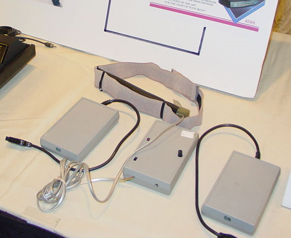
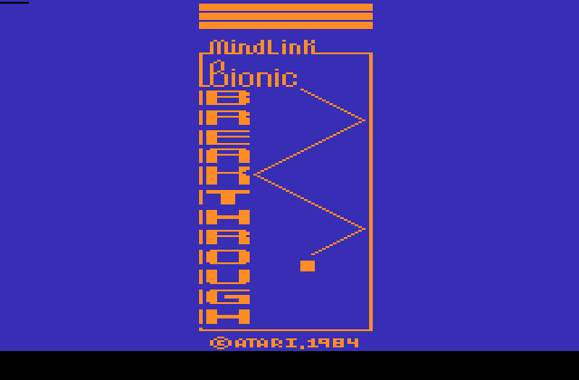
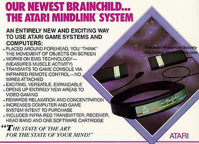

"The
original first-off unit did not work very well because once the user was
comfortable
with the system (10 minutes or so) his muscle
reactions would overdrive the system.
To
counter this we redesigned the signal amplifiers to step down the signal
amplification to reach a useable level."
"As a company, Atari NEVER saw the device to test. There were only a few people
that were given the final design prototypes
to look at in a non-functional form.
The 6
working units taken to the CES show were not distributed to any group
for official use or testing."
However it should be noted that again, Atari was ahead of its
time with
innovations
such as these and given time for refinement and newer design technologies
the idea of the
Mindlink system would've grown into a successful peripheral.

Fully working Atari Mindlink Prototypes shown by
the Atari Museum at the 2003 Austin Gaming Expo
MINDLINK INDUSTRIAL DESIGN -
A Chinese design group affiliated with Atari/Wong, Hong Kong created the
headband and
transceiver cases. The original design of the headband was not useable.
It very stiff and did not fit a "range" of head
sizes. The "final" design used an elastic
belt/band with a Velcro fastener at the back of the
head. The greatest design problem
was the method used for picking up the
actual signals in the headband. The metal
contact buttons (3 each) needed further
development.
MINDLINK ELECTRONICS -
The electronic design was done at Atari/Wong, Hong
Kong by an Atari consultant,
Jim Scudder, of Lynchberg, Virginia and
Senior Design Engineer and
Manager of the Continuation Engineering
Group, Bill Lapham.
Case and headband design was directed by Anthony
Jones
from Atari Home Computer Marketing.

No new software was ever written. The demo
software we used was PONG and
Breakout (renamed Bionic Breakthrough). This
was because the initial unit could
only control a screen object in a left-right
or up-down configuration; dubbed a
"bang-bang" mode. In the lab, an advanced
controller could control almost any Atari
software that was useable with a standard
Atari joystick, but, due to time constraints,
this couldn't be rolled out for the June
1984 CES summer show at McCormick Place
in Chicago. Proof of this concept is easily
made by strapping the headband
to a bicep or thigh and training that muscle
group to control an object.
One month after Mindlink's introduction, Atari's Consumer Electronics and Home
Computer divisions were sold to Tramiel
Technologies Ltd. Jack Tramiel and his sons
saw the Mindlink as a toy; they canceled it's
development at a cost of many millions of dollars.
Contracts for tooling and semiconductor/IC
development had been signed
with toolmakers and National Semiconductor.
For those of us that were not dismissed,
Tramiel's stated objective was to destroy compete
against Apple.
The sad part of Mindlink's history is that the day after it was splashed on
national TV
Someone associated with the original
Battlestar Galactica film/series,
came to the booth and brought a proposal from Rafer
Johnson,
Olympic Champion and the then president of Special
Olympics.
They were proposing that Atari develop sports
software for the next Special Olympics.
The Rose Kennedy Foundation was going to foot the
total development cost.
This would have opened a door to development of
computer control for the handicapped;
which could not realistically be funded any other
way.
There were proposals afoot for a system that could attach to the forehead,
biceps and thighs to give 5 degrees of "bang-bang"
control; a device which
could have brought a Wii type controller to
market in the late 80s.
In addition, the original biofeedback device, using
a graphical presentation and screen
color changes, was capable of training one
to enter high states of relaxation
in very short periods of time.
An additional device that was in proposal was a heads-up display that could
emulate a "missile launch" control system
such as used in the movie "Firefox",
with Clint Eastwood, released in 1982. The
concept was to use a overlay screen
on the face of the TV monitor that was 20%
reflective. This would give
the illusion of the heads-up reflection and
would incorporate weapons pickers and
other function selection. The video game and
sight cross-hairs were onscreen behind
the overlay. Ocular trackers were also
proposed as another controller to use with the headband.

An earlier project called "Bionics"
Robert Coppack's "Bionics" system nvolved a similar type of bioelectronics
device.
The original "Mindlink" device was for biofeedback.
It was reworked as a game
controller because the "Lawyers" were not
going to get into the liability of fail-safe,
life-support medical devices. In addition, the
biofeedback market was miniscule in
comparison to the controller market.
The case design was done by Regan
Cheng, according to Regan the Bio-Electronics system was originally going to be
a module that would have plugged into the
Bionics medical system.